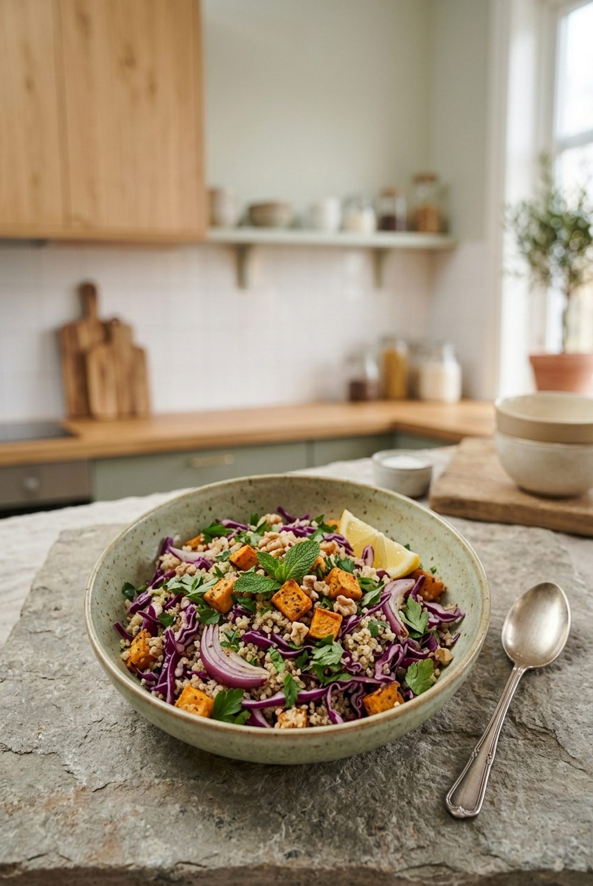

Hauptgericht · vegetarisch
Quinoa-Salat mit Rotkohl und Süßkartoffel
Kein Salat, nach dem du in einer Stunde wieder Hunger hast: Quinoa, Ofen-Süßkartoffel und Rotkohl.

Nährwerte pro Portion
Eiweiß18 g
Ballaststoffe11 g
Folat186 µg
Magnesium171 mg
Zutaten für 2 Portionen
- 100 g Quinoa
- 1 Süßkartoffel (ca. 300 g)
- 150 g Rotkohl
- 1 Handvoll Feldsalat oder Babyspinat
- 2 EL Kürbiskerne
- 60 g Feta
- 2 EL Olivenöl
- 1 EL Apfelessig
- 1 TL Senf, 1 TL Honig
- ½ TL Kreuzkümmel
- Salz, Pfeffer
Enthält: Milch, Senf. Nährwerte berechnet mit dem Bundeslebensmittelschlüssel (BLS 4.0), 609 kcal · 71 g Kohlenhydrate · 25 g Fett pro Portion.
Zubereitung
- Backofen auf 210 °C vorheizen. Süßkartoffel würfeln, mit 1 EL Öl, Kreuzkümmel und Salz mischen und 20–25 Minuten rösten.
- Quinoa heiß abspülen und in der doppelten Menge Salzwasser 15 Minuten garen, abkühlen lassen.
- Rotkohl in sehr feine Streifen hobeln und mit einer Prise Salz kräftig durchkneten, damit er zart wird.
- Essig, Senf, Honig und restliches Öl verrühren. Alles mischen und mit Feldsalat, Feta und Kürbiskernen anrichten.
Schmeckt warm und kalt. Für die Lunchbox Feldsalat erst kurz vor dem Essen unterheben.
Mehr aus der App
Dieses Rezept stammt aus der WellANNI-App (Foto KI-generiert). Dort findest du über 200 geprüfte Rezepte, planst deine Woche für den ganzen Haushalt samt Einkaufsliste und siehst, was dein Teller schon geliefert hat.
WellANNI App holenPassende Kollektion: Echtes Essen